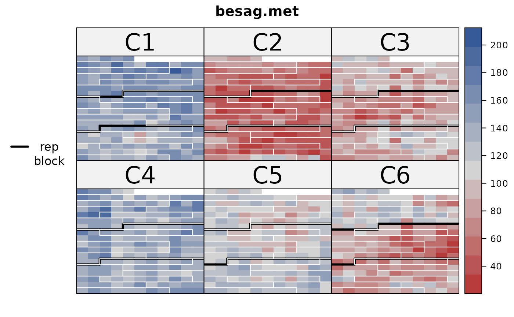
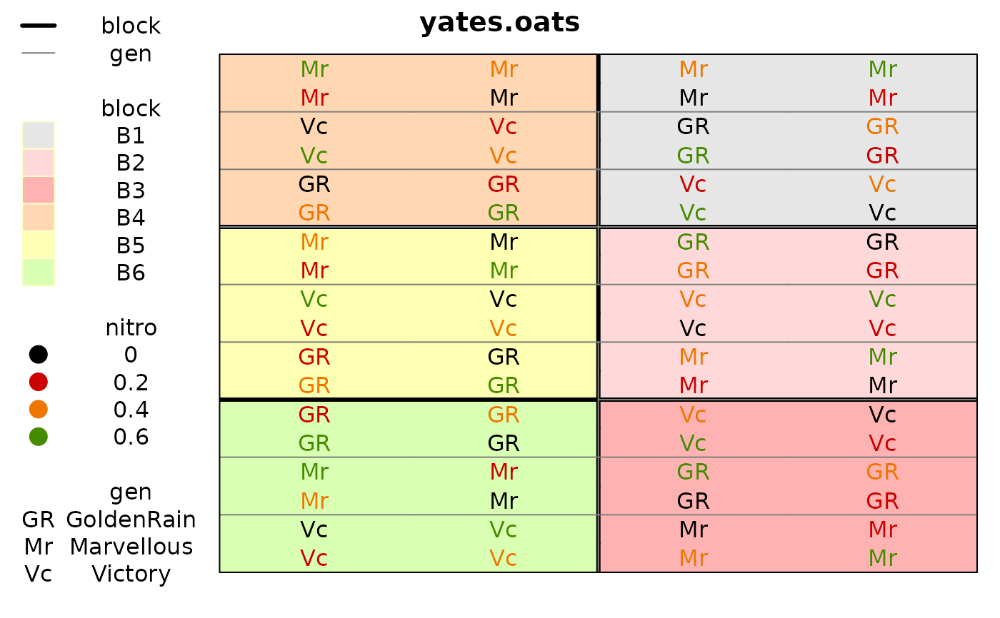

Use this function to plot the layout of a rectangular lattice field experiment and also the observed data values.
Usage
desplot(
data,
form = formula(NULL ~ x + y),
num = NULL,
num.string = NULL,
col = NULL,
col.string = NULL,
text = NULL,
text.string = NULL,
out1 = NULL,
out1.string = NULL,
out2 = NULL,
out2.string = NULL,
dq = NULL,
dq.string = NULL,
col.regions = RedGrayBlue,
col.text = NULL,
text.levels = NULL,
out1.gpar = list(col = "black", lwd = 3),
out2.gpar = list(col = "yellow", lwd = 1, lty = 1),
at,
midpoint = "median",
ticks = FALSE,
flip = FALSE,
main = NULL,
xlab,
ylab,
shorten = "abb",
show.key = TRUE,
key.cex,
cex = 0.4,
strip.cex = 0.75,
subset = TRUE,
gg = FALSE,
...
)
ggdesplot(
data,
form = formula(NULL ~ x + y),
num = NULL,
num.string = NULL,
col = NULL,
col.string = NULL,
text = NULL,
text.string = NULL,
out1 = NULL,
out1.string = NULL,
out2 = NULL,
out2.string = NULL,
dq = NULL,
dq.string = NULL,
col.regions = RedGrayBlue,
col.text = NULL,
text.levels = NULL,
out1.gpar = list(col = "black", lwd = 3),
out2.gpar = list(col = "yellow", lwd = 1, lty = 1),
at,
midpoint = "median",
ticks = FALSE,
flip = FALSE,
main = NULL,
xlab,
ylab,
shorten = "abb",
show.key = TRUE,
key.cex,
cex = 0.4,
strip.cex = 0.75,
subset = TRUE,
gg = FALSE,
...
)Arguments
- data
A data frame.
- form
A formula like
yield~x*y|location. Note x,y are numeric.- num
Bare name (no quotes) of the column of the data to use as a factor for number-coding the text in each cell.
- num.string
String name of the column of the data to use as a factor for number-coding the text in each cell.
- col
Bare name (no quotes) of the column of the data to use for color-coding the text shown in each cell.
- col.string
String name of the column of the data to use for color-coding the text shown in each cell.
- text
Bare name (no quotes) of the column of the data to use for the actual text shown in each cell.
- text.string
String name of the column of the data to use for the actual text shown in each cell.
- out1
Bare name (no quotes) of the column of the data to use for first-level outlining around blocks of cells.
- out1.string
String name of the column of the data to use for first-level outlining around blocks of cells.
- out2
Bare name (no quotes) of the column of the data to use for second-level outlining around blocks of cells.
- out2.string
String name of the column of the data to use for second-level outlining around blocks of cells.
- dq
Bare name (no quotes) of the column of the data to use for indicating bad data quality with diagonal lines. This can either be a numeric vector or a factor/text. Cells with 1/"Q"/"Questionable" have one diagonal line. Cells with 2/"B"/"Bad","S","Suppressed" have crossed diagonal lines.
- dq.string
String name of the column of the data to use for indicating bad data quality with diagonal lines.
- col.regions
Colors for the fill color of cells.
- col.text
Vector of colors for text strings.
- text.levels
Character strings to use instead of default 'levels'.
- out1.gpar
A list of graphics parameters for first-level outlining. Can either be an ordinary
list()or a call togpar()from thegridpackage.- out2.gpar
Graphics parameters for second-level of outlining.
- at
Breakpoints for the color ribbon. Use this instead of 'zlim'. Note: using 'at' causes 'midpoint' to be set to NULL.
- midpoint
Method to find midpoint of the color ribbon. One of 'midrange', 'median, or a numeric value.
- ticks
If TRUE, show tick marks along the bottom and left sides.
- flip
If TRUE, vertically flip the image.
- main
Main title.
- xlab
Label for x axis.
- ylab
Label for y axis.
- shorten
Method for shortening text in the key, either 'abb', 'sub', 'no', or FALSE.
- show.key
If TRUE, show the key on the left side. (This is not the ribbon.)
- key.cex
Left legend cex.
- cex
Expansion factor for text/number in each cell.
- strip.cex
Strip cex.
- subset
An expression that evaluates to logical index vector for subsetting the data.
- gg
If TRUE, desplot() switches to ggdesplot().
- ...
Other.
Details
To create the plot using lattice graphics:
1. desplot(...).
To create the plot using ggplot2 graphics, use one of the following:
1. ggdesplot(...).
2. desplot(..., gg=TRUE).
3. options(desplot.gg=TRUE); desplot(...).
Method 3 is useful to modify all results from existing scripts.
The lattice version is complete, mature, and robust.
The ggplot2 version is incomplete. The legend can only show colors,
and some function arguments are ignored.
In general, lattice graphics are about 4-5 times faster than ggplot2 graphics.
Not all lattice parameters are passed down to xyplot, but it
is possible to make almost any change to the plot by assigning the
desplot object to a variable and then edit the object by hand or use
update to modify the object. Then print it manually. See the
first example below.
Use col.regions to specify fill colors. This can either be a vector
of colors or a function that produces a vector of colors. If the response
variable is a factor and col.regions is a function, it will
be ignored and the cells are filled with default light-colored backgrounds
and a key is placed on the left. If the response variable is
numeric, the cells are colored according to col.regions, and
a ribbon key is placed on the right.
Use shorten='abb' (this is default) to shorten the cell text to 2
characters using the abbreviate function
Use shorten='sub' to use a 3-character substring.
Use shorten='no' or shorten=FALSE for no shortening.
Note that two sub-plots with identical levels of the split-plot factor can be adjacent to each other by virtue of appearing in different whole-plots. To correctly outline the split-plot factor, simply concatenate the whole-plot factor and sub-plot factor together.
To get a map of a field with a true aspect ratio (lattice version only), include 'aspect=ylen/xlen' in the call, where 'ylen' is the vertical length of the field and 'xlen' is the horizontal length of the field.
To call this function inside another function, you can hack like this: vr <- "yield"; vx <- "x"; vy <- "y"; eval(parse(text=paste("desplot(", vr, "~", vx, "*", vy, ", data=yates.oats)")))
References
K. Ryder (1981). Field plans: why the biometrician finds them useful. Experimental Agriculture, 17, 243–256.
Examples
if(require(agridat)){
# Show how to customize any feature. Here: make the strips bigger.
data(besag.met)
d1 <- desplot(besag.met,
yield ~ col*row|county,
main="besag.met",
out1=rep, out2=block, out2.gpar=list(col="white"), strip.cex=2)
d1 <- update(d1, par.settings = list(layout.heights=list(strip=2)))
print(d1)
# Show experiment layout
data(yates.oats)
desplot(yates.oats,
yield ~ col+row,
out1=block, out2=gen)
desplot(yates.oats,
block ~ col+row,
col=nitro, text=gen, cex=1, out1=block,
out2=gen, out2.gpar=list(col = "gray50", lwd = 1, lty = 1))
}
#> Loading required package: agridat

